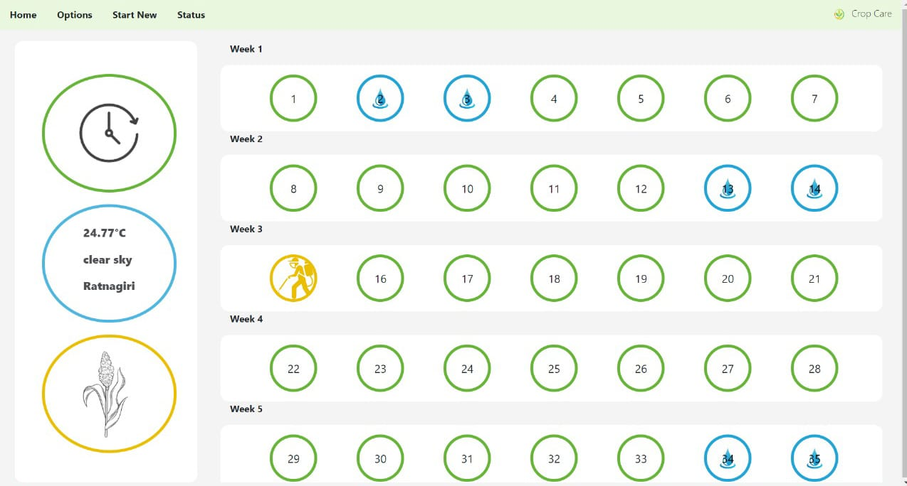
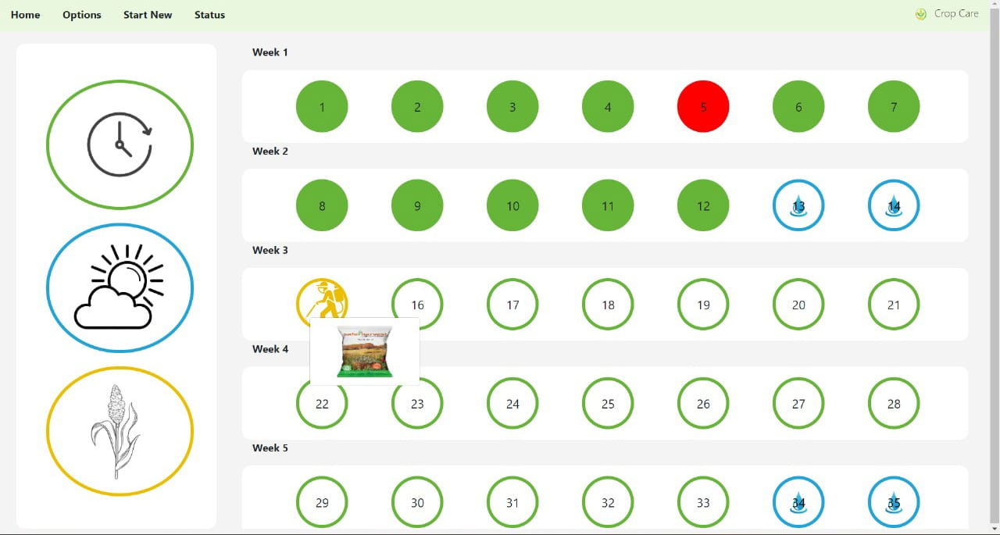
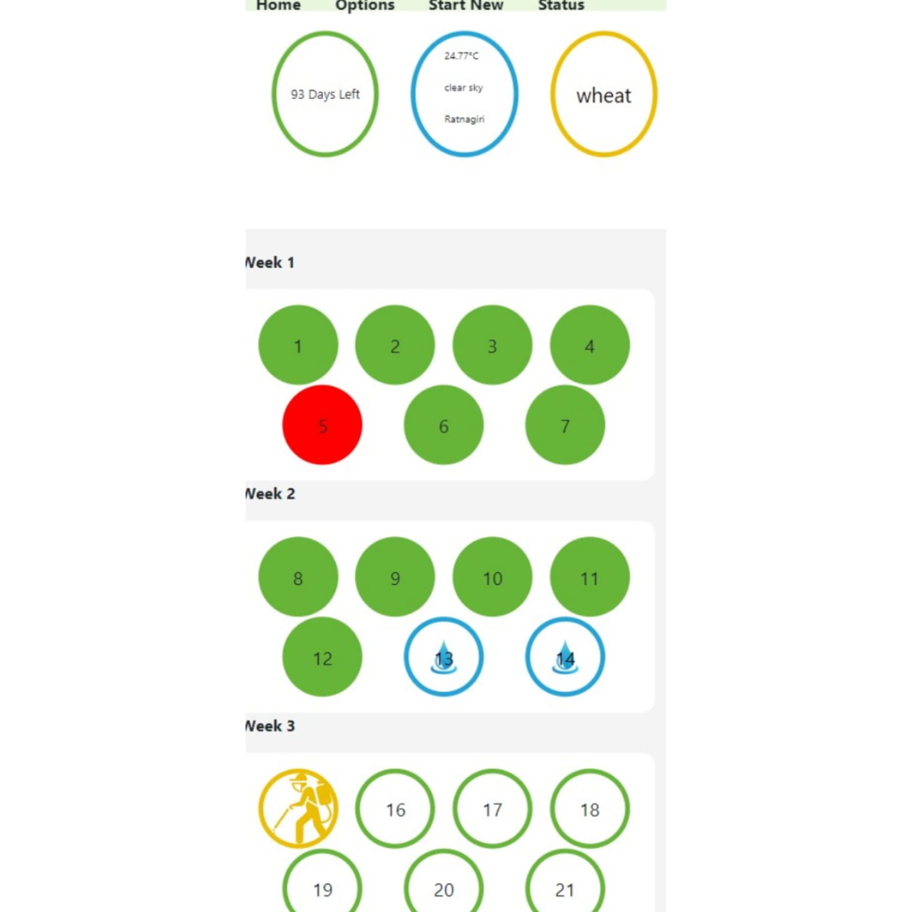

Crop Care
Ready to Track? start a new or old journey
Get Started
Harvest Success with every input: Your Field, Your Data, Your growth!

1. Tracking progress through consistent data input enables you to gauge performance over time, spot
emerging trends, and empowers informed decision-making based on reliable insights.
2. If you forget to water your crops one day, our website will immediately notify you with a prominent red alert the next day. This timely reminder empowers you to take corrective action and prevent potential damage to your plants before it’s too late.


3. By leveraging advanced algorithms and agronomic expertise, our website analyzes factors such as crop type, pest infestation levels, and environmental conditions to suggest the most suitable pesticides for farmers. This not only simplifies the decision-making process but also helps farmers optimize pest control efforts and minimize potential risks.
4. farmers can conveniently access the website from their smartphones or tablets while working in the field. Whether they're logging tasks, checking alerts, or accessing data insights, our website adapts to their device's screen size and ensures a seamless user experience on the go.
